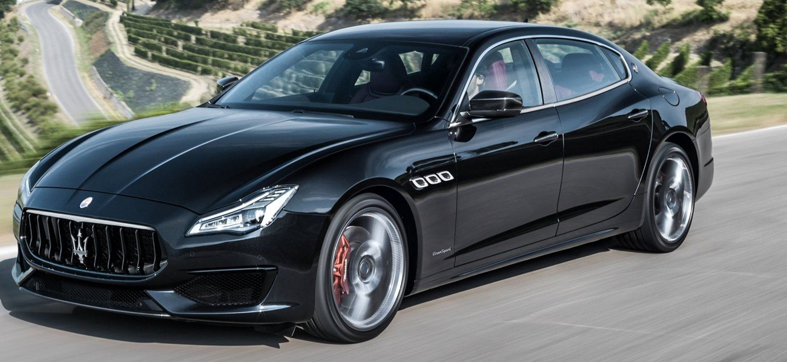

Maserati Quattroporte-спортивные полноразмерные седаны класса «люкс», которые изготовляются итальянской компанией Maserati с 1963 года. В переводе с итальянского «Quattroporte» означает «четыре двери». В настоящее время существует шесть поколений Maserati Quattroporte.
Quattroporte второго поколения дебютировал на Парижском автосалоне в октябре 1974 года. Модель в техническом плане очень сильно отличалась от предшественника. Автомобиль разрабатывался в годы, когда компанией Maserati владела компания Citroen. Седан увеличился в длине на 200 мм до 5200 мм, колесная база увеличилась до 3070 мм. Автомобиль стал переднеприводным и базировался на платформе Citroen SM с гидропневматической подвеской. Двигатели были доступны только шестицилиндровые объёмом 3,0 литра (190 л.с.) и 3,2 литра (200 л.с.), которые также устанавливали на Citroen SM. В связи с топливным кризисом в Европе спрос на спортивные автомобили резко упал и было реализовано всего 13 экземпляров Quattroporte до 1976 года.